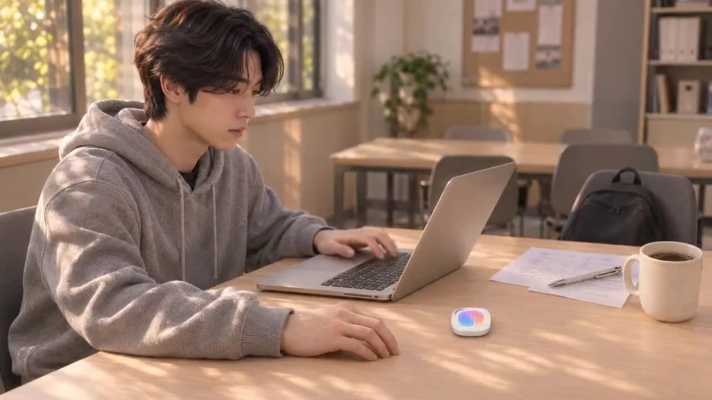
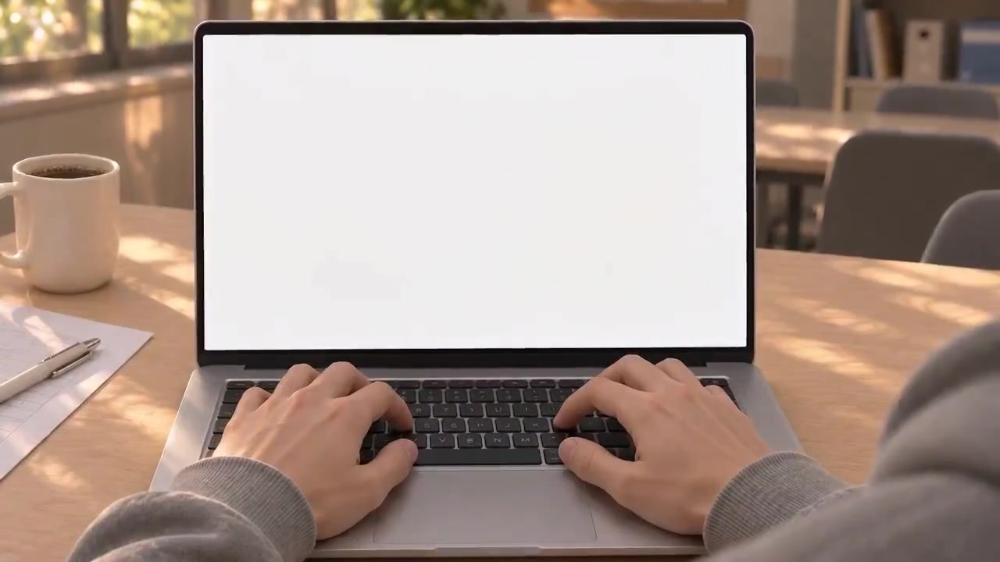
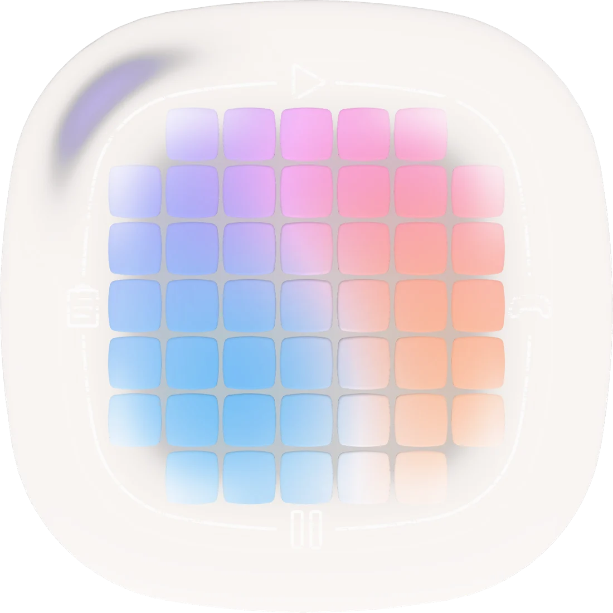

영상 속 노블을 직접 움직여 보세요.


EP 01
EP 01 완료
도윤의 선택이 무엇을 바꿨는지 볼까요?
ONE DAY, THREE STATES
하루 동안 세 번 바뀐 의도
같은 AI가, 도윤이 그린 위치에 따라 다가가기도 물러나기도 했어요.
나를 기억하는 AI에게,
지금의 나를 전하다.
스크롤
2030작은 기판 하나에서
AI가 돌아가는 세계
내 AI와 공간의 AI가
서로 정보를 주고받아요
그리고 나를,
오래 기억해요
기억이 길어질수록,
추천은 과거를 향해요
“평소의 나는 그렇지만,지금은 이런 시간을 보내고 싶어.”
업무 ↔ 오락, 휴식 ↔ 활동 — 두 개의 축
과제에 집중
마음은 딱 넷으로 나뉘지 않아요. 45칸의 위치로 조합과 정도까지 전해요
판단이 아니라, 의도를 더 신중하게 읽기 위한 단서예요
경로 0칸 · 되돌아감 0회
제안이 떠도 내 선택은 그대로. 거절하면 빛은 조용히 사라지고, 미룬 일은 내가 정한 때에 다시 와요
최종 상태는 언제나 손을 뗀 그 자리. 한 번 반짝이고, 숨 쉬듯 빛나요
패드를 누른 채 움직여 보세요
“AI 추천이 편하긴 한데,
늘 지금 내 마음 같진 않아.”
그리고 오늘은, 다시 방문객으로
기록에 맞춘 추천이 계속 반복되고
기기가 선택을 대신하는 느낌이 불편해요
지금의 마음을, 직접 전하고 싶어요
영상 속 노블을 직접 움직여 보세요.


도윤의 선택이 무엇을 바꿨는지 볼까요?
같은 AI가, 도윤이 그린 위치에 따라 다가가기도 물러나기도 했어요.
손안에 들어오는 둥근 사각형
여섯 개의 층
테두리는 AI의 자리
직접 돌려 보세요
패드 위치 두 축 좌표
이동 경로
머문 시간
망설임 방향 전환
일정 · 마감 맥락
패드 빛 나의 선택
테두리 빛 AI 제안
알림 정책
안내의 양
조명 · 스피커
어디로도 가지 않아요. 데이터는 기기 밖으로 나가지 않아요

손끝과 빛만으로